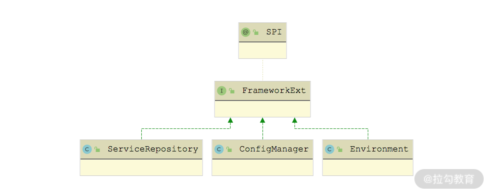
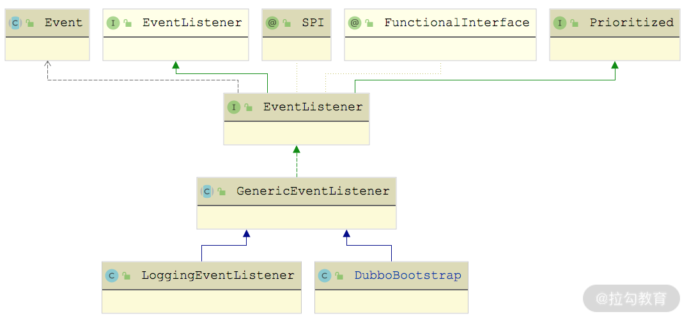
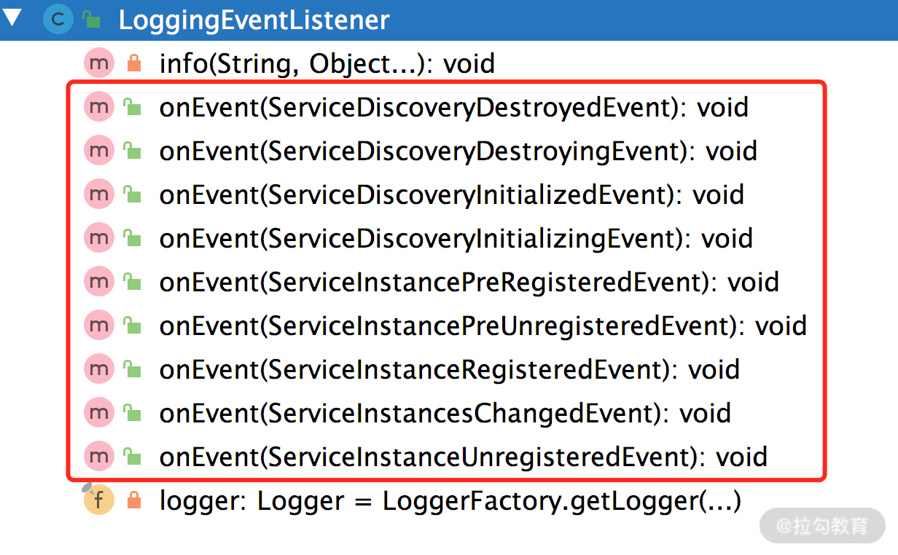

- 00 开篇词 深入掌握 Dubbo 原理与实现，提升你的职场竞争力.md
- 01 Dubbo 源码环境搭建：千里之行，始于足下.md
- 02 Dubbo 的配置总线：抓住 URL，就理解了半个 Dubbo.md
- 03 Dubbo SPI 精析，接口实现两极反转（上）.md
- 04 Dubbo SPI 精析，接口实现两极反转（下）.md
- 05 海量定时任务，一个时间轮搞定.md
- 06 ZooKeeper 与 Curator，求你别用 ZkClient 了（上）.md
- 07 ZooKeeper 与 Curator，求你别用 ZkClient 了（下）.md
- 08 代理模式与常见实现.md
- 09 Netty 入门，用它做网络编程都说好（上）.md
- 10 Netty 入门，用它做网络编程都说好（下）.md
- 11 简易版 RPC 框架实现（上）.md
- 12 简易版 RPC 框架实现（下）.md
- 13 本地缓存：降低 ZooKeeper 压力的一个常用手段.md
- 14 重试机制是网络操作的基本保证.md
- 15 ZooKeeper 注册中心实现，官方推荐注册中心实践.md
- 16 Dubbo Serialize 层：多种序列化算法，总有一款适合你.md
- 17 Dubbo Remoting 层核心接口分析：这居然是一套兼容所有 NIO 框架的设计？.md
- 18 Buffer 缓冲区：我们不生产数据，我们只是数据的搬运工.md
- 19 Transporter 层核心实现：编解码与线程模型一文打尽（上）.md
- 20 Transporter 层核心实现：编解码与线程模型一文打尽（下）.md
- 21 Exchange 层剖析：彻底搞懂 Request-Response 模型（上）.md
- 22 Exchange 层剖析：彻底搞懂 Request-Response 模型（下）.md
- 23 核心接口介绍，RPC 层骨架梳理.md
- 24 从 Protocol 起手，看服务暴露和服务引用的全流程（上）.md
- 25 从 Protocol 起手，看服务暴露和服务引用的全流程（下）.md
- 26 加餐：直击 Dubbo “心脏”，带你一起探秘 Invoker（上）.md
- 27 加餐：直击 Dubbo “心脏”，带你一起探秘 Invoker（下）.md
- 28 复杂问题简单化，代理帮你隐藏了多少底层细节？.md
- 29 加餐：HTTP 协议 + JSON-RPC，Dubbo 跨语言就是如此简单.md
- 30 Filter 接口，扩展 Dubbo 框架的常用手段指北.md
- 31 加餐：深潜 Directory 实现，探秘服务目录玄机.md
- 32 路由机制：请求到底怎么走，它说了算（上）.md
- 33 路由机制：请求到底怎么走，它说了算（下）.md
- 34 加餐：初探 Dubbo 动态配置的那些事儿.md
- 35 负载均衡：公平公正物尽其用的负载均衡策略，这里都有（上）.md
- 36 负载均衡：公平公正物尽其用的负载均衡策略，这里都有（下）.md
- 37 集群容错：一个好汉三个帮（上）.md
- 38 集群容错：一个好汉三个帮（下）.md
- 39 加餐：多个返回值不用怕，Merger 合并器来帮忙.md
- 40 加餐：模拟远程调用，Mock 机制帮你搞定.md
- 41 加餐：一键通关服务发布全流程.md
- 42 加餐：服务引用流程全解析.md
- 43 服务自省设计方案：新版本新方案.md
- 44 元数据方案深度剖析，如何避免注册中心数据量膨胀？.md
- 45 加餐：深入服务自省方案中的服务发布订阅（上）.md
- 46 加餐：深入服务自省方案中的服务发布订阅（下）.md
- 47 配置中心设计与实现：集中化配置 and 本地化配置，我都要（上）.md
- 48 配置中心设计与实现：集中化配置 and 本地化配置，我都要（下）.md
- 49 结束语 认真学习，缩小差距.md
48 配置中心设计与实现：集中化配置 and 本地化配置，我都要（下）
在上一课时，我们详细分析了 Configuration 接口以及 DynamicConfiguration 接口的实现，其中 DynamicConfiguration 接口实现是动态配置中心的基础。那 Dubbo 中的动态配置中心是如何启动的呢？我们将在本课时详细介绍。
基础配置类
在 DubboBootstrap 初始化的过程中，会调用 ApplicationModel.initFrameworkExts() 方法初始化所有 FrameworkExt 接口实现，继承关系如下图所示：

FrameworkExt 继承关系图
相关代码片段如下：
public static void initFrameworkExts() {
Set<FrameworkExt> exts = ExtensionLoader.getExtensionLoader(FrameworkExt.class).getSupportedExtensionInstances();
for (FrameworkExt ext : exts) {
ext.initialize();
}
}
ConfigManager 用于管理当前 Dubbo 节点中全部 AbstractConfig 对象，其中就包括 ConfigCenterConfig 这个实现的对象，我们通过 XML、Annotation 或是 API 方式添加的配置中心的相关信息（例如，配置中心的地址、端口、协议等），会转换成 ConfigCenterConfig 对象。
在 Environment 中维护了上一课时介绍的多个 Configuration 对象，具体含义如下。
- propertiesConfiguration（PropertiesConfiguration 类型）：全部 OrderedPropertiesProvider 实现提供的配置以及环境变量或是 -D 参数中指定配置文件的相关配置信息。
- systemConfiguration（SystemConfiguration 类型）：-D 参数配置直接添加的配置信息。
- environmentConfiguration（EnvironmentConfiguration 类型）：环境变量中直接添加的配置信息。
- externalConfiguration、appExternalConfiguration（InmemoryConfiguration 类型）：使用 Spring 框架且将 include-spring-env 配置为 true 时，会自动从 Spring Environment 中读取配置。默认依次读取 key 为 dubbo.properties 和 application.dubbo.properties 到这里两个 InmemoryConfiguration 对象中。
- globalConfiguration（CompositeConfiguration 类型）：用于组合上述各个配置来源。
- dynamicConfiguration（CompositeDynamicConfiguration 类型）：用于组合当前全部的配置中心对应的 DynamicConfiguration。
- configCenterFirst（boolean 类型）：用于标识配置中心的配置是否为最高优先级。
在 Environment 的构造方法中会初始化上述 Configuration 对象，在 initialize() 方法中会将从 Spring Environment 中读取到的配置填充到 externalConfiguration 以及 appExternalConfiguration 中。相关的实现片段如下：
public Environment() {
// 创建上述Configuration对象
this.propertiesConfiguration = new PropertiesConfiguration();
this.systemConfiguration = new SystemConfiguration();
this.environmentConfiguration = new EnvironmentConfiguration();
this.externalConfiguration = new InmemoryConfiguration();
this.appExternalConfiguration = new InmemoryConfiguration();
}
public void initialize() throws IllegalStateException {
// 读取对应配置，填充上述Configuration对象
ConfigManager configManager = ApplicationModel.getConfigManager();
Optional<Collection<ConfigCenterConfig>> defaultConfigs = configManager.getDefaultConfigCenter();
defaultConfigs.ifPresent(configs -> {
for (ConfigCenterConfig config : configs) {
this.setExternalConfigMap(config.getExternalConfiguration());
this.setAppExternalConfigMap(config.getAppExternalConfiguration());
}
});
this.externalConfiguration.setProperties(externalConfigurationMap);
this.appExternalConfiguration.setProperties(appExternalConfigurationMap);
}
启动配置中心
完成了 Environment 的初始化之后，DubboBootstrap 接下来会调用 startConfigCenter() 方法启动一个或多个配置中心客户端，核心操作有两个：一个是调用 ConfigCenterConfig.refresh() 方法刷新配置中心的相关配置；另一个是通过 prepareEnvironment() 方法根据 ConfigCenterConfig 中的配置创建 DynamicConfiguration 对象。
private void startConfigCenter() {
Collection<ConfigCenterConfig> configCenters = configManager.getConfigCenters();
if (CollectionUtils.isEmpty(configCenters)) { // 未指定配置中心
... ... // 省略该部分逻辑
} else {
for (ConfigCenterConfig configCenterConfig : configCenters) { // 可能配置了多个配置中心
configCenterConfig.refresh(); // 刷新配置
// 检查配置中心的配置是否合法 ConfigValidationUtils.validateConfigCenterConfig(configCenterConfig);
}
}
if (CollectionUtils.isNotEmpty(configCenters)) {
// 创建CompositeDynamicConfiguration对象，用于组装多个DynamicConfiguration对象
CompositeDynamicConfiguration compositeDynamicConfiguration = new CompositeDynamicConfiguration();
for (ConfigCenterConfig configCenter : configCenters) {
// 根据ConfigCenterConfig创建相应的DynamicConfig对象，并添加到CompositeDynamicConfiguration中
compositeDynamicConfiguration.addConfiguration(prepareEnvironment(configCenter));
}
// 将CompositeDynamicConfiguration记录到Environment中的dynamicConfiguration字段
environment.setDynamicConfiguration(compositeDynamicConfiguration);
}
configManager.refreshAll(); // 刷新所有AbstractConfig配置
}
1. 刷新配置中心的配置
首先来看 ConfigCenterConfig.refresh() 方法，该方法会组合 Environment 对象中全部已初始化的 Configuration，然后遍历 ConfigCenterConfig 中全部字段的 setter 方法，并从 Environment 中获取对应字段的最终值。具体实现如下：
public void refresh() {
// 获取Environment对象
Environment env = ApplicationModel.getEnvironment();
// 将当前已初始化的所有Configuration合并返回
CompositeConfiguration compositeConfiguration = env.getPrefixedConfiguration(this);
Method[] methods = getClass().getMethods();
for (Method method : methods) {
if (MethodUtils.isSetter(method)) { // 获取ConfigCenterConfig中各个字段的setter方法
// 根据配置中心的相关配置以及Environment中的各个Configuration，获取该字段的最终值
String value = StringUtils.trim(compositeConfiguration.getString(extractPropertyName(getClass(), method)));
// 调用setter方法更新ConfigCenterConfig的相应字段
if (StringUtils.isNotEmpty(value) && ClassUtils.isTypeMatch(method.getParameterTypes()[0], value)) {
method.invoke(this, ClassUtils.convertPrimitive(method.getParameterTypes()[0], value));
}
} else if (isParametersSetter(method)) { // 设置parameters字段，与设置其他字段的逻辑基本类似，但是实现有所不同
String value = StringUtils.trim(compositeConfiguration.getString(extractPropertyName(getClass(), method)));
if (StringUtils.isNotEmpty(value)) {
// 获取当前已有的parameters字段
Map<String, String> map = invokeGetParameters(getClass(), this);
map = map == null ? new HashMap<>() : map;
// 覆盖parameters集合
map.putAll(convert(StringUtils.parseParameters(value), ""));
// 设置parameters字段
invokeSetParameters(getClass(), this, map);
}
}
}
}
这里我们关注一下 Environment.getPrefixedConfiguration() 方法，该方法会将 Environment 中已有的 Configuration 对象以及当前的 ConfigCenterConfig 按照顺序合并，得到一个 CompositeConfiguration 对象，用于确定配置中心的最终配置信息。具体实现如下：
public synchronized CompositeConfiguration getPrefixedConfiguration(AbstractConfig config) {
// 创建CompositeConfiguration对象，这里的prefix和id是根据ConfigCenterConfig确定的
CompositeConfiguration prefixedConfiguration = new CompositeConfiguration(config.getPrefix(), config.getId());
// 将ConfigCenterConfig封装成ConfigConfigurationAdapter
Configuration configuration = new ConfigConfigurationAdapter(config);
if (this.isConfigCenterFirst()) { // 根据配置确定ConfigCenterConfig配置的位置
// The sequence would be: SystemConfiguration -> AppExternalConfiguration -> ExternalConfiguration -> AbstractConfig -> PropertiesConfiguration
// 按序组合已有Configuration对象以及ConfigCenterConfig
prefixedConfiguration.addConfiguration(systemConfiguration);
prefixedConfiguration.addConfiguration(environmentConfiguration);
prefixedConfiguration.addConfiguration(appExternalConfiguration);
prefixedConfiguration.addConfiguration(externalConfiguration);
prefixedConfiguration.addConfiguration(configuration);
prefixedConfiguration.addConfiguration(propertiesConfiguration);
} else {
// 配置优先级如下：SystemConfiguration -> AbstractConfig -> AppExternalConfiguration -> ExternalConfiguration -> PropertiesConfiguration
prefixedConfiguration.addConfiguration(systemConfiguration);
prefixedConfiguration.addConfiguration(environmentConfiguration);
prefixedConfiguration.addConfiguration(configuration);
prefixedConfiguration.addConfiguration(appExternalConfiguration);
prefixedConfiguration.addConfiguration(externalConfiguration);
prefixedConfiguration.addConfiguration(propertiesConfiguration);
}
return prefixedConfiguration;
}
2. 创建 DynamicConfiguration 对象
通过 ConfigCenterConfig.refresh() 方法确定了所有配置中心的最终配置之后，接下来就会对每个配置中心执行 prepareEnvironment() 方法，得到对应的 DynamicConfiguration 对象。具体实现如下：
private DynamicConfiguration prepareEnvironment(ConfigCenterConfig configCenter) {
if (configCenter.isValid()) { // 检查ConfigCenterConfig是否合法
if (!configCenter.checkOrUpdateInited()) {
return null; // 检查ConfigCenterConfig是否已初始化，这里不能重复初始化
}
// 根据ConfigCenterConfig中的各个字段，拼接出配置中心的URL，创建对应的DynamicConfiguration对象
DynamicConfiguration dynamicConfiguration = getDynamicConfiguration(configCenter.toUrl());
// 从配置中心获取externalConfiguration和appExternalConfiguration，并进行覆盖
String configContent = dynamicConfiguration.getProperties(configCenter.getConfigFile(), configCenter.getGroup());
String appGroup = getApplication().getName();
String appConfigContent = null;
if (isNotEmpty(appGroup)) {
appConfigContent = dynamicConfiguration.getProperties
(isNotEmpty(configCenter.getAppConfigFile()) ? configCenter.getAppConfigFile() : configCenter.getConfigFile(),
appGroup
);
}
try {
// 更新Environment
environment.setConfigCenterFirst(configCenter.isHighestPriority());
environment.updateExternalConfigurationMap(parseProperties(configContent));
environment.updateAppExternalConfigurationMap(parseProperties(appConfigContent));
} catch (IOException e) {
throw new IllegalStateException("Failed to parse configurations from Config Center.", e);
}
return dynamicConfiguration; // 返回通过该ConfigCenterConfig创建的DynamicConfiguration对象
}
return null;
}
完成 DynamicConfiguration 的创建之后，DubboBootstrap 会将多个配置中心对应的 DynamicConfiguration 对象封装成一个 CompositeDynamicConfiguration 对象，并记录到 Environment.dynamicConfiguration 字段中，等待后续使用。另外，还会调用全部 AbstractConfig 的 refresh() 方法（即根据最新的配置更新各个 AbstractConfig 对象的字段）。这些逻辑都在 DubboBootstrap.startConfigCenter() 方法中，前面已经展示过了，这里不再重复。
配置中心初始化的后续流程
完成明确指定的配置中心初始化之后，DubboBootstrap 接下来会执行 useRegistryAsConfigCenterIfNecessary() 方法，检测当前 Dubbo 是否要将注册中心也作为一个配置中心使用（常见的注册中心，都可以直接作为配置中心使用，这样可以降低运维成本）。
private void useRegistryAsConfigCenterIfNecessary() {
if (environment.getDynamicConfiguration().isPresent()) {
return; // 如果当前配置中心已经初始化完成，则不会将注册中心作为配置中心
}
if (CollectionUtils.isNotEmpty(configManager.getConfigCenters())) {
return; // 明确指定了配置中心的配置，哪怕配置中心初始化失败，也不会将注册中心作为配置中心
}
// 从ConfigManager中获取注册中心的配置（即RegistryConfig），并转换成配置中心的配置（即ConfigCenterConfig）
configManager.getDefaultRegistries().stream()
.filter(registryConfig -> registryConfig.getUseAsConfigCenter() == null || registryConfig.getUseAsConfigCenter())
.forEach(registryConfig -> {
String protocol = registryConfig.getProtocol();
String id = "config-center-" + protocol + "-" + registryConfig.getPort();
ConfigCenterConfig cc = new ConfigCenterConfig();
cc.setId(id);
if (cc.getParameters() == null) {
cc.setParameters(new HashMap<>());
}
if (registryConfig.getParameters() != null) {
cc.getParameters().putAll(registryConfig.getParameters());
}
cc.getParameters().put(CLIENT_KEY, registryConfig.getClient());
cc.setProtocol(registryConfig.getProtocol());
cc.setPort(registryConfig.getPort());
cc.setAddress(registryConfig.getAddress());
cc.setNamespace(registryConfig.getGroup());
cc.setUsername(registryConfig.getUsername());
cc.setPassword(registryConfig.getPassword());
if (registryConfig.getTimeout() != null) {
cc.setTimeout(registryConfig.getTimeout().longValue());
}
cc.setHighestPriority(false); // 这里优先级较低
configManager.addConfigCenter(cc);
});
startConfigCenter(); // 重新调用startConfigCenter()方法，初始化配置中心
}
完成配置中心的初始化之后，后续需要 DynamicConfiguration 的地方直接从 Environment 中获取即可，例如，DynamicConfigurationServiceNameMapping 就是依赖 DynamicConfiguration 实现 Service ID 与 Service Name 映射的管理。
接下来，DubboBootstrap 执行 loadRemoteConfigs() 方法，根据前文更新后的 externalConfigurationMap 和 appExternalConfigurationMap 配置信息，确定是否配置了额外的注册中心或 Protocol，如果有，则在此处转换成 RegistryConfig 和 ProtocolConfig，并记录到 ConfigManager 中，等待后续逻辑使用。
随后，DubboBootstrap 执行 checkGlobalConfigs() 方法完成 ProviderConfig、ConsumerConfig、MetadataReportConfig 等一系列 AbstractConfig 的检查和初始化，具体实现比较简单，这里就不再展示。
再紧接着，DubboBootstrap 会通过 initMetadataService() 方法初始化 MetadataReport、MetadataReportInstance 以及 MetadataService、MetadataServiceExporter，这些元数据相关的组件在前面的课时中已经深入分析过了，这里的初始化过程并不复杂，你若感兴趣的话可以参考源码进行学习。
在 DubboBootstrap 初始化的最后，会调用 initEventListener() 方法将 DubboBootstrap 作为 EventListener 监听器添加到 EventDispatcher 中。DubboBootstrap 继承了 GenericEventListener 抽象类，如下图所示：

EventListener 继承关系图
GenericEventListener 是一个泛型监听器，它可以让子类监听任意关心的 Event 事件，只需定义相关的 onEvent() 方法即可。在 GenericEventListener 中维护了一个 handleEventMethods 集合，其中 Key 是 Event 的子类，即监听器关心的事件，Value 是处理该类型 Event 的相应 onEvent() 方法。
在 GenericEventListener 的构造方法中，通过反射将当前 GenericEventListener 实现的全部 onEvent() 方法都查找出来，并记录到 handleEventMethods 字段中。具体查找逻辑在 findHandleEventMethods() 方法中实现：
private Map<Class<?>, Set<Method>> findHandleEventMethods() {
Map<Class<?>, Set<Method>> eventMethods = new HashMap<>();
of(getClass().getMethods()) // 遍历当前GenericEventListener子类的全部方法
// 过滤得到onEvent()方法，具体过滤条件在isHandleEventMethod()方法之中：
// 1.方法必须是public的
// 2.方法参数列表只有一个参数，且该参数为Event子类
// 3.方法返回值为void，且没有声明抛出异常
.filter(this::isHandleEventMethod)
.forEach(method -> {
Class<?> paramType = method.getParameterTypes()[0];
Set<Method> methods = eventMethods.computeIfAbsent(paramType, key -> new LinkedHashSet<>());
methods.add(method);
});
return eventMethods;
}
在 GenericEventListener 的 onEvent() 方法中，会根据收到的 Event 事件的具体类型，从 handleEventMethods 集合中找到相应的 onEvent() 方法进行调用，如下所示：
public final void onEvent(Event event) {
// 获取Event的实际类型
Class<?> eventClass = event.getClass();
// 根据Event的类型获取对应的onEvent()方法并调用
handleEventMethods.getOrDefault(eventClass, emptySet()).forEach(method -> {
ThrowableConsumer.execute(method, m -> {
m.invoke(this, event);
});
});
}
我们可以查看 DubboBootstrap 的所有方法，目前并没有发现符合 isHandleEventMethod() 条件的方法。但在 GenericEventListener 的另一个实现—— LoggingEventListener 中，可以看到多个符合 isHandleEventMethod() 条件的方法（如下图所示），在这些 onEvent() 方法重载中会输出 INFO 日志。

LoggingEventListener 中 onEvent 方法重载
至此，DubboBootstrap 整个初始化过程，以及该过程中与配置中心相关的逻辑就介绍完了。
总结
本课时我们重点介绍了 Dubbo 动态配置中心启动的核心流程，以及该流程涉及的重要组件类。
首先，我们介绍了 ConfigManager 和 Environment 这两个非常基础的配置类；然后又讲解了 DubboBootstrap 初始化动态配置中心的核心流程，以及动态配置中心启动的流程；最后，还分析了 GenericEventListener 监听器的相关内容。
关于这部分的内容，如果你有什么问题或者好的经验，欢迎你在留言区和我分享。
© 2019 - 2023 Liangliang Lee. Powered by gin and hexo-theme-book.